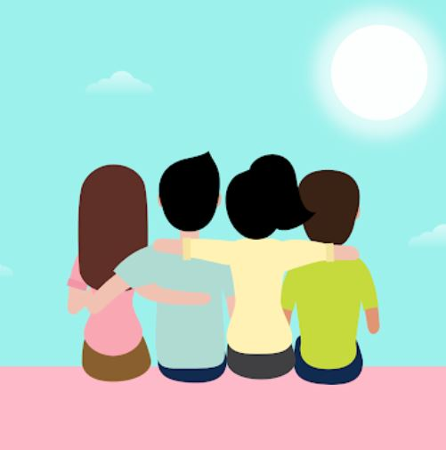
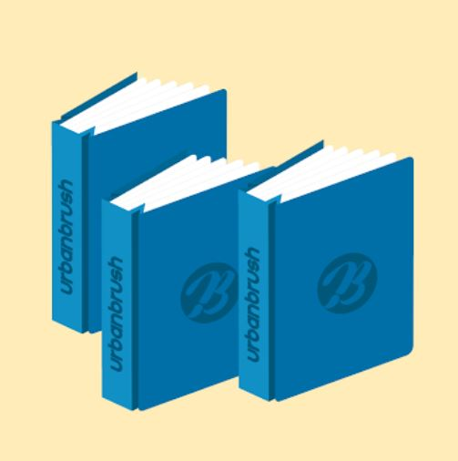
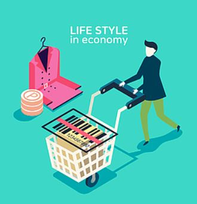
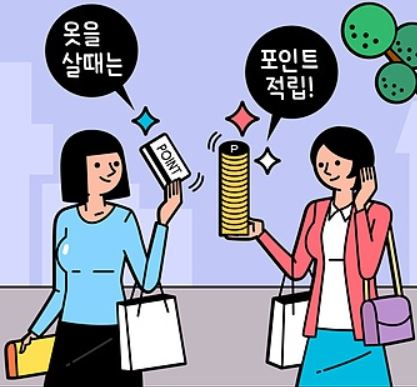
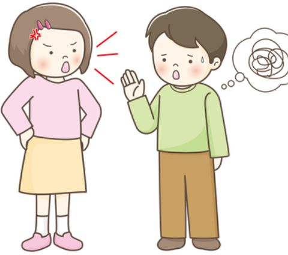
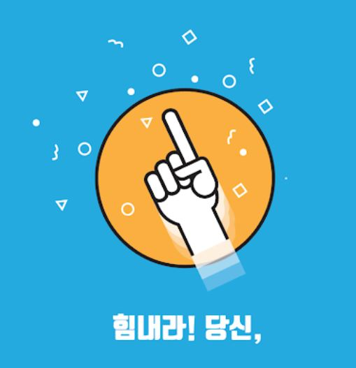
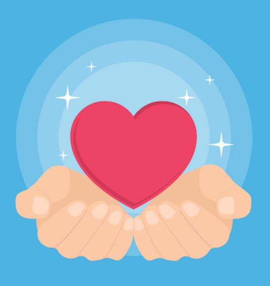

당신이 살아가면서 가장 중요시 하는 것
'빵집'을 선택한 당신은?
경제적 자립을 가장 중요시 합니다.
쓰는만큼 일하고 벌고 저축하며, 생활을 할 수 있는
능력만 있다면 아무런 문제가 없다고 생각합니다.
'꽃집'을 선택한 당신은?

가족과 친구관계를 가장 중요시 합니다.
가까운 사람과의 내정과 신뢰만 있다면,
서로 돕고 의지하며 살아갈 수 있다고 여겨
사람과의 유대 관계를 중요시 합니다.
'문구점'을 선택한 당신은?

기술 혹은 지식 등에 해당하는 스펙을 가장 중요시 합니다.
개인의 스펙을 자신이 어떤 사람인지를 증명하는 지표로 여겨
이를 통해 타인에게 신용을 얻고 사회적 지위를 얻는다고 생각합니다.
당신이 낭비하는 것
'애완견을 산책하러 나온 사람에게 물어본다'를 선택한 당신은?

자잘한 소비가 많은 편입니다.
굳이 필요하지 않지만 싸기 때문에 물건을 구매하거나
체면을 세울 자리가 아님에도 체면치레를 하기도 하는데요.
큰 지출은 없지만 자잘한 지출들이 쌓이다보니
결과적으로 큰 지출이 되기도 한다고 합니다.
'가까이 있는 지구대의 경찰에게 물어본다'를 선택한 당신은?

최대한 지출을 자제하는 '절약정신'을 가지고 있긴 하지만
남의 눈을 신경쓰는 일이 많아 '이정도는 내야겠지?' 라는 생각으로
주관없이 돈을 쓰게 된다고 합니다.
혼자 있을 때는 돈을 잘 안쓰는 반면에
사람들과 어울리는 상황에서는 돈을 쓰는 편입니다.
'혼자 해결하려 해본다'를 선택한 당신은?
자신의 가치관상 돈을 함부로 쓰는 편이 아니기에 헛돈을 쓰는 일이 거의 없다고 합니다. 하지만 정작 본인이 정말 가지고 싶어하는 것에는 갑작스러운 큰 돈을 쓰기도 하며 저축을 잘 하다가도 남들이 생각하기에 희한한 곳에 돈을 쓰기도 하는데요. 소비에 대한 사상은 좋을지 몰라도 관리에 있어서는 꼼꼼한 편은 아닙니다.
당신의 호감도를
깎아내리는 것
'혼자 있는 아이'를 선택한 당신은?

상대방과 대화할 때 경솔해 보이지 않도록 조심해야 합니다.
상대방의 비밀이나 사생활에 대해 알고 있다면
되도록 이야기하지 않는게 좋으며, 상대방이 자리에 없을때는
필요 이상으로 사생활에 대해 깊이 알려고 하지 않는 것이 좋습니다.
'노숙자'를 선택한 당신은?
평소 타인에게 방어적인 태도를 가지고 있어 마음을 쉽게 열지 못합니다.
당신에게 호의적으로 다가오는 사람에게 너무 딱딱한 태도로 일관하지 말고
편안하게 대화를 주고 받거나 미소를 보이는 등의 노력이 필요합니다.
'불편해 보이는 노인'을 선택한 당신은?
상대방과의 대화에 있어서 경청하는 태도를 가져야 합니다.
당신은 상대방의 말을 듣기 보다는 자신의 이야기를 많이 하는 편이며
당신의 생각을 상대방에게 강요하기도 하는데, 이는 자칫하면 상대방에게
비호감을 살 수도 있는 행동입니다.
당신이 가지고
있는 능력
'유명인의 저택'을 선택한 당신은?

사람의 재능이나 능력을 파악하는 눈이 있습니다.
당신은 다른 사람의 재능과 능력을 잘 찾아 격려와 용기를 주는 힘이 있습니다.
'콘서트홀 혹은 미술관'을 선택한 당신은?
왕성한 호기심과 순수함을 가지고 있어 항상 신나고 즐거운 일을 찾아갑니다.
사람들에게 인생을 즐기는 방법을 알려줄 수 있을 만큼 열정적인 사람이라고 합니다.
'청정한 물과 숲'을 선택한 당신은?

부정적인 생각을 하는 사람들에게 인생의 가치를 찾아 줄 수 있는 능력이 있습니다.
자신의 삶 뿐만 아니라 타인의 삶까지도 풍요롭게 만들어 주는 사람으로 상대방의
삶을 사랑과 자상함으로 이해하는 사람입니다.